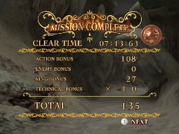
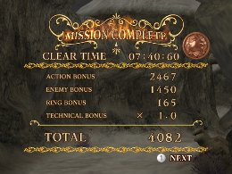
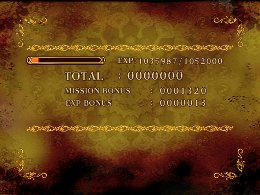

The Results
The Basics
The Results screens displayed after you clear a mission consist of six bonuses, and the points you earn become Experience Points. While it’s possible to get a rough idea of how the bonus points work just from the names, here is a detailed explanation of how the numbers are calculated.

Action Bonus
Number of Pearls collected Number of Pearls collected x 1p
Time Break 30p when used for 3 seconds
Add 10p × times used for each second thereafter
Speed Break Distance used at one time + 10p × times used
Grinding Distance (1/2) + 10p × times used
Grind Tricks Times used × 20p
The Grinding-related Action Bonuses are a little complicated. You can earn points by grinding a set distance, and the more often you grind at least that distance, the more points you earn. If you stop grinding before you reach the set distance, you will not earn any points.
For Grind Tricks, simply performing a trick is not enough. You must perform a trick and land on another grind in order to earn points.
Enemy Bonus
Number of enemies defeated Number defeated × 50p
This is calculated using the number of enemies defeated, regardless of the type of enemy. You can also receive set bonuses for defeating certain bosses.
Ring Bonus
Number of Rings collected Number of Rings × 3p
The Rings you collect during a mission are converted to Experience Points. The number of Rings you lose by taking damage or being defeated doesn’t matter—the calculation is based simply of the number of Rings you collect.
Technical Bonus
Undefeated: no damage × 2.0
Undefeated: took damage once × 1.5
Undefeated: took damage 2-3 times × 1.2
Undefeated: took damage 4-5 times × 1.1
Took damage 6 or more times × 1.0
Defeated × 1.0
Mission failed × 0.3
The Technical Bonus multiplier is calculated based on the number of times you took damage during the mission. Your total points from the Action Bonus, Enemy Bonus and Ring Bonus are multiplied by the Technical Bonus, so even if you let some Rings, Pearls or enemies get away, clearing the mission without taking any damage will get you a lot of Experience Points.

Mission Bonus
The Mission Bonus is a set amount of bonus points you receive when you clear a mission for the first time. You receive more points for longer missions, and fewer points for short ones. Once you clear a mission and receive a Mission Bonus, you won’t receive a bonus even if you clear it again.
Experience Bonus
EXP Bonus earned during mission Experience Bonus earned during the mission
Fire Soul Number of Fire Souls collected in mission × 500p
Experience Points earned during the mission using skills such as Cancel Absorber and Expert Drift, along with 500p for each Fire Soul you collected, will be added to the total.
Use this information to better understand the results, and take advantage of it to maximize your Experience Points!
« Understanding Speed Breaks and Time Breaks | The Basics | Skill Element Groups »
 RSS
RSS